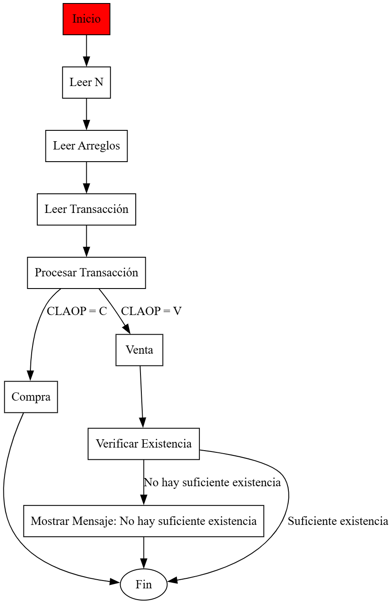

Requisitos
- Definir una clase
Inventario para guardar los arreglos de claves, cantidades, el numProductos actual y el MAX_PRODUCTOS.
- El
main debe leer los productos iniciales y luego entrar en un bucle de transacciones.
- El bucle termina si el tipo de operación es 'X'.
- Implementar un método
buscarProducto (búsqueda lineal) que retorna el índice o -1.
- Implementar
procesarCompra(inv, clave, cant):
- Si el producto existe, suma
cant al stock.
- Si no existe y hay espacio (
numProductos < MAX), lo añade como nuevo producto.
- Si no hay espacio, devuelve un error.
- Implementar
procesarVenta(inv, clave, cant):
- Si el producto no existe, devuelve un error.
- Si existe pero
stock < cant, devuelve error de stock.
- Si existe y hay stock, resta
cant.
- El
main imprime el inventario final.
Diagrama de Flujo
Este diagrama ilustra la lógica principal del bucle de transacciones.

Código Fuente (POO)
import java.util.Scanner;
public class PS_4_36 {
// 1. Clase interna estática para guardar el estado del inventario
public static class Inventario {
public final int MAX_PRODUCTOS;
public int[] clavesProductos;
public int[] cantidadesProductos;
public int numProductos;
public Inventario(int max) { /*...*/ }
}
// 2. El método main (ahora solo maneja I/O)
public static void main(String[] args) {
Inventario inv = new Inventario(100); // MAX_PRODUCTOS = 100
Scanner scanner = new Scanner(System.in);
// ... (Lectura de N, claves iniciales y cantidades) ...
// Paso 3: Actualizar los arreglos según las transacciones
boolean finDatos = false;
while (!finDatos) {
System.out.println("Ingrese (Tipo, Clave, Cantidad) o (X, 0, 0):");
char tipoOperacion = scanner.next().charAt(0);
int claveProducto = scanner.nextInt();
int cantidad = scanner.nextInt();
String resultadoOperacion = null; // Para guardar mensajes de error
switch (tipoOperacion) {
case 'C':
resultadoOperacion = procesarCompra(inv, claveProducto, cantidad);
break;
case 'V':
resultadoOperacion = procesarVenta(inv, claveProducto, cantidad);
break;
case 'X':
finDatos = true;
break;
default:
resultadoOperacion = "Operación inválida.";
}
if (resultadoOperacion != null) {
System.out.println(resultadoOperacion);
}
}
// ... (Impresión del inventario final) ...
scanner.close();
}
// --- 3. Métodos de Lógica (¡Esto es lo que probaremos!) ---
public static int buscarProducto(Inventario inv, int claveProducto) {
for (int i = 0; i < inv.numProductos; i++) {
if (inv.clavesProductos[i] == claveProducto) {
return i; // Se encontró
}
}
return -1; // No se encontró
}
public static String procesarCompra(Inventario inv, int claveProducto, int cantidad) {
int indice = buscarProducto(inv, claveProducto);
if (indice != -1) {
// Producto existe, sumar stock
inv.cantidadesProductos[indice] += cantidad;
return null; // Éxito
} else {
// Producto no existe, añadir nuevo
if (inv.numProductos < inv.MAX_PRODUCTOS) {
inv.clavesProductos[inv.numProductos] = claveProducto;
inv.cantidadesProductos[inv.numProductos] = cantidad;
inv.numProductos++;
return null; // Éxito
} else {
return "No se pueden agregar más productos. Capacidad máxima alcanzada.";
}
}
}
public static String procesarVenta(Inventario inv, int claveProducto, int cantidad) {
int indice = buscarProducto(inv, claveProducto);
if (indice != -1) {
// Producto existe
if (inv.cantidadesProductos[indice] >= cantidad) {
inv.cantidadesProductos[indice] -= cantidad;
return null; // Éxito
} else {
return "No hay suficiente cantidad del producto.";
}
} else {
return "El producto no existe.";
}
}
}